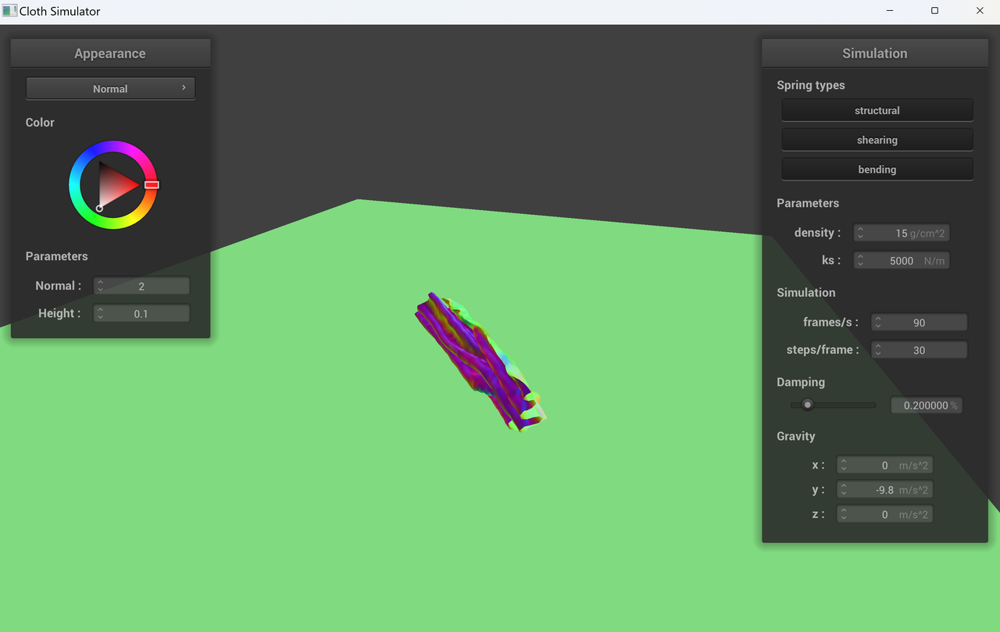

In this project, we implemented a real-time cloth simulation with a mass and spring based system. In part 1, we constructed the cloth as a grid of point masses and springs. In part 2, we simulated the movement of the cloth caused by external and internal forces via Verlet integration. In part 3, we handled collisions between the cloth and other objects, namely spheres and planes, by updating the position of colliding point masses. In part 4, we implemented an efficient method of preventing self-collisions using spatial hashing. In part 5, we implemented five different shaders via GLSL shader programs.
Part 1: Masses and springs
In this part, we implemented the function to build a grid composed of masses and springs. We populated all the point masses based on the preset orientation. If the orientation is horizontal, we set the y coordinate to 1, and the x and z coordinates to be the width and height, respectively. If the orientation is vertical, we set x and y coordinates to be the width and height, and set the z coordinate to a random offset between -1/1000 to 1/1000. We stored these point masses in a 1D vector in row major order. We also pinned the point masses according to the given pinned vector.
Then, we created the springs that connect the point masses. We looped through all the point masses and created three types of springs: structural, shearing, and bending. Since we stored the pointers of each point mass in the 1D vector, we utilized pointer arithmetic to access the point mass objects.
wireframe - each vertex is a point mass and each edge is a spring
Below, you will find the wireframe rendered (1) without any shearing constraints, (2) with only shearing constraints, and (3) with all constraints.
(1) without any shearing constraints(2) with only shearing constraints(3) with all constraints
Part 2: Simulation via numerical integration
In this part, we accumulated the external and internal/spring forces acting on each point mass and used Verlet integration to update their position after a single time step. Regarding the forces acting on each point mass, the only external force was gravity and we calculated the spring force using Hooke’s law. Additionally, we constrained the length of each spring to be at most 10% greater than its rest length by performing this check per spring and positioning its two point masses closer together upon violation.
shaded cloth from pinned4.json in its final resting state
Here are some observations from parameter tuning:
ks
With a low spring constant, the cloth is much “looser”, meaning it distorts more due to gravity. With a higher spring constant, the cloth is much “stiffer”. Wrinkles and sagging are more apparent in the cloth with a lower spring constant. It also rippled more when falling from its initial horizontal position.
ks = 50 N/mks = 50,000 N/m
density
The effect of increasing density is similar to decreasing the spring constant. With a higher density, the effects of gravity are more apparent in the form of wrinkles and sagging.
density = 5 g/cm^2density = 500 g/cm^2
damping
With no damping, the cloth falls faster, swings back and forth when it reaches the bottom, and has more wrinkles. With full damping, the cloth moves more slowly and appears to be more “stiff”. The screenshot with no damping was taken after the cloth fell, swung backwards away from the camera, and then came halfway back up.
damping = 0%damping = 1%
Part 3: Handling collisions with other objects
In this part, we implemented functions to handle collisions with spheres and planes. To handle collisions with spheres, we first found the path between the point mass’s position and the origin of the sphere by extending the distance between the two points. Then, we see if the point mass is inside the sphere by checking if the length of the path is less than the radius of the sphere. If so, we apply a correction vector to bump the point mass up to the intersection/tangent point of the sphere. The tangent point of the sphere can be found by scaling the unit vector from the origin to the point mass by the sphere’s radius.
To handle collisions with planes, we first found the path from the point mass’s position to the plane, as well the path from the point mass’s last position to the plane. Then, we check if the position and last position are on different sides of the plane using the line equation test from lecture 2. We take the dot products of each path with the normal vector and check if the signs are the same. If they are on different sides, we apply a correction vector to the position so that it reaches slightly above the tangent point of the plane. The tangent point can be found by calculating the projection of the position over the plane. We add SURFACE_OFFSET so the point mass lies slightly above the plane.
Below are images of our cloth with normal shading in its final resting state on the sphere using different spring constant ks values.
ks = 5000 N/m
When ks = 5000 (default), the cloth wraps around the sphere due to gravity pulling the cloth down.
ks = 500 N/m
When ks = 500 (lower spring constant), the cloth wraps even more due to the decrease of spring constant which makes the cloth looser and more stretchy compared to ks = 5000.
ks = 50000 N/m
When ks = 50000 (higher spring constant), the cloth is stiffer and does not wrap around the sphere as much as when ks = 5000 or 500. It is because the spring between point masses are stronger and it pulls the point masses together. So the cloth is less stretchy and flexible.
Here, you can see our cloth lying peacefully on the plane.
cloth resting on plane
Part 4: Handling self-collisions
In this part, we handled self-collisions of the cloth model so when the cloth is falling on itself, it can fold on itself instead of ignoring itself and falling onto the plane. The simple way to achieve this is to loop through all pairs of point masses and to apply a spring correction force between them. But this approach would take O(n^2) which is too inefficient for real-time simulation.
Instead, we use spatial hashing to hash nearby points into the same hash bucket so we can just loop through pairs of points within the same bucket. To do this, we first partition the 3D space into multiple 3D boxes. Then, we can use a simple hash function to hash the point mass’s position to the corresponding 3D box. In our case, we divide the coordinates by the dimensions of the 3D boxes and cast them into integer so the close values of the coordinates will be casted into the same value. Then we use a hash function h(x,y,z) = x * 31 + y * 37 + z * 41 to hash the coordinates to a float value. We chose 31, 37, 41 because they are prime numbers which can avoid more unwanted collisions. Then, we populate a hash map for all the point masses.
Instead of looping through every pair of point masses, we now only loop through each hash bucket. In each hash bucket, we check if the distance between the given point mass and each point mass in the hash bucket is within 2 * thickness apart. If it is, we apply a correction force to the point mass. We repeat this for all the point masses in the same hash bucket and average the correction force and scales it down by simulation_steps.
Below are a series of images that documents how our cloth falls and folds on itself, ending with the cloth at a somewhat restful state.
1 / 62 / 63 / 6

4 / 65 / 66 / 6
Here are some observations from parameter tuning:
ks
With a lower spring constant, the cloth is looser and folds more because the spring forces between point masses are weaker. If we increase the spring constant, the cloth becomes stiffer and less wrinkly due to stronger spring forces.
ks = 500 N/mks = 50,000 N/m
density
With a lower density, the cloth is less wrinkly and smoother. When the density is high, wrinkles become more apparent due to gravity.
density = 5 g/cm^2density = 500 g/cm^2
Part 5: Shaders
In this part of the project, we implemented various shaders. Shaders are separate programs that shade in 3D scenes and are designed to run in parallel on a computer’s GPU (as opposed to CPU). We use two types of shaders: 1) a vertex shader, which applies transforms to vertices, and 2) a fragment shader, which computes and write the color for a given fragment, which in our case, is a single pixel.
The vertex shader receives a position, normal, and tangent vector in model space, which it converts to world space, as well as texture coordinates, and sends these values to the fragment shader. The fragment shader then performs computations using these world space vectors.
Blinn-Phong Shading
For Blinn-Phong, we aggregated ambient, diffuse, and specular light, each with custom coefficients. The result can be seen below:
ambient light only (k_a = 0.1)diffuse light only (k_d = u_color)specular light only (k_s = 0.5)all light components
Texture Mapping
For texture mapping, we sample from the given texture map to get each pixel’s color.
night sky texture shading
Bump vs Displacement Mapping
Bump and displacement mapping are both shading methods for visualizing height variation on 3D surfaces. Bump mapping works by altering the surface normal direction to produce the illusion of height, whereas displacement mapping works by altering the positions of vertices in addition to the surface normals. Below, you can see how both methods render objects similar in color, but only displacement mapping creates physical changes in height.
bump mapping on spheredisplacement mapping on spherebump mapping on clothdisplacement mapping on cloth
Now, we compare the two shaders when changing the sphere mesh’s coarseness from 16x16 to 128x128. The lower resolution spheres in the left column are visibly jagged.
bump mapping with resolution 16x16bump mapping with resolution 128x128displacement mapping with resolution 16x16displacement mapping with resolution 128x128
Mirror Shading
For mirror shading, we reflected the camera ray across the surface normal and sampled the pixel color from an environment map using the reflected/incoming vector.
mirror shading on spheremirror shading on cloth
Reflection
We started this project separately with Harrison primarily working on task 1, 3 and Phoebe primarily working on task 2, 4, 5. We debugged separately for most parts and had one in-person session at the end where we helped each other on debugging and finishing the write up. This was a really interesting project and getting to the final renders was really rewarding!